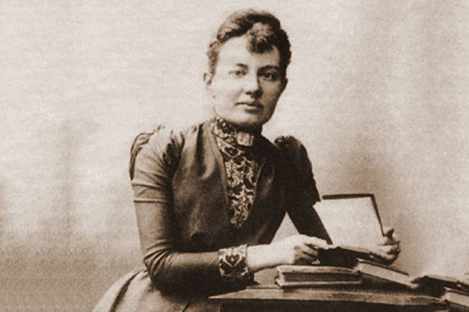

Women's History
Sofya Kovalevskaya

Sofya Vasilyevna Kovalevskaya (15 January 1850-10 February 1891), descended from the Belarusian noble family. She was a mathematician who made noteworthy contributions to analysis, partial differential equations and mechanics. She was a pioneer for women in mathematics around the world - the first woman to obtain a doctorate in mathematics, the first woman appointed to a full professorship in northern Europe and one of the first women to work for a scientific journal as an editor.
According to historian of science Ann Hibner Koblitz, Kovalevskaya was "the greatest known woman scientist before the twentieth century".